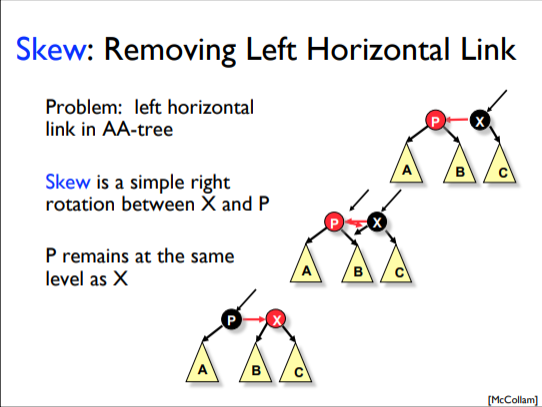
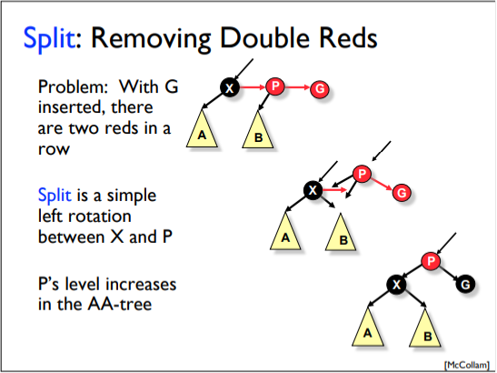
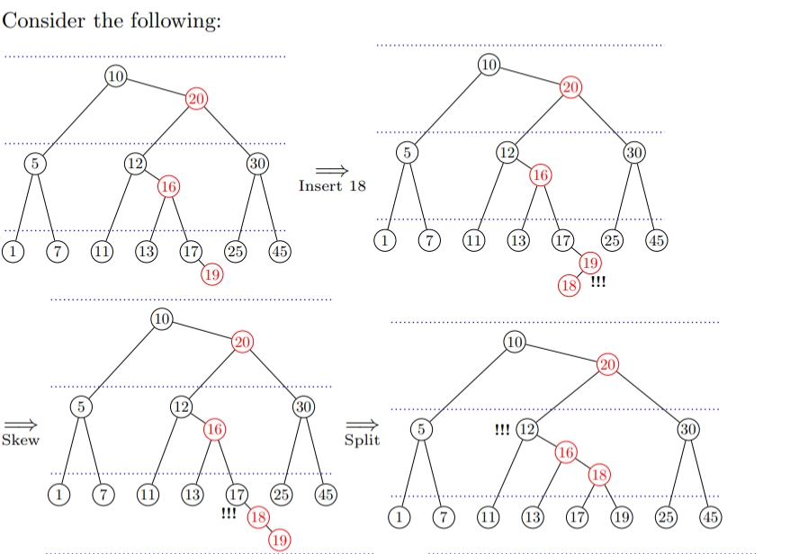
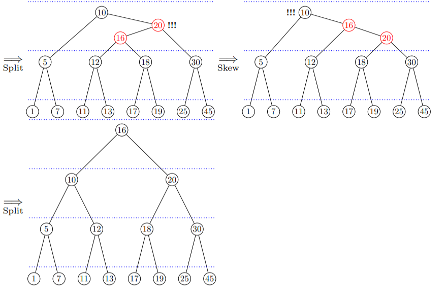
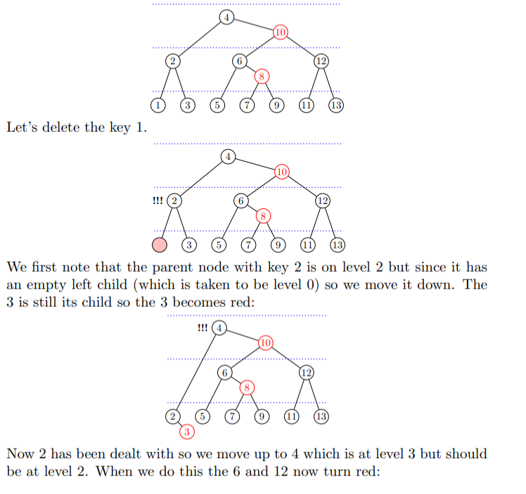
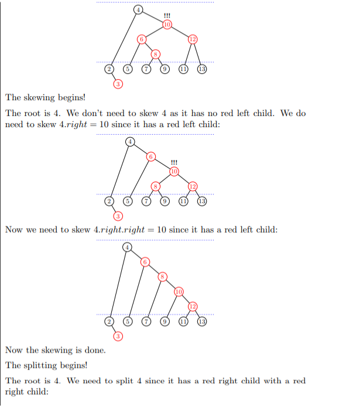
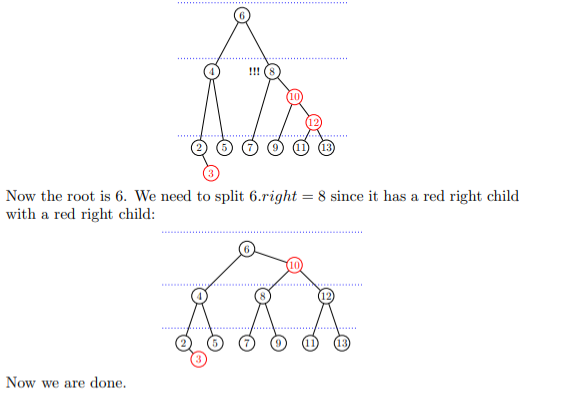

Team ID / Group No: 16
A self-balancing BST that guarantees logarithmic height O(log n).
Balance is maintained by assigning a Color (Red or Black) to every node and enforcing strict structural rules.
New nodes are always RED.
If Parent is Red → Violation! (Double Red)
Removing a Black node breaks Black Height.
Requires complex "Double Black" fixing.
Coloring Red preserves Black Height.
Rebalancing is bottom-up.
Action: Recolor P, U, G.
Propagates up to Grandparent.
Action: Rotation to form Line.
Transforms into Case 3.
Action: Rotate & Recolor.
Final Fix. P becomes Black root.
Child X inherits Y's blackness, becoming "Double Black". We fix this by looking at sibling S.
Recolor & Rotate. Transforms to Black Sibling case.
Recolor & Propagate. DB moves up to Parent.
Rotate & Final Recolor. Problem Solved.
A balanced search tree where every internal node has either 2 or 3 children.
They provide the conceptual basis for balanced BSTs.
AA Trees simulate 2–3 trees using right-leaning links and levels.
New key is always inserted into a leaf node.
If inserting into a 3-node, it becomes a temporary 4-node.
Visualizing the 4-node Split
Never delete internal nodes directly.
If sibling is a 3-node, take a key. Rotate through parent.
If sibling is a 2-node, merge sibling + parent key + deficient node into a 3-node.
Warning: Parent might become deficient.
We know Red-Black and 2-3 Trees are fast (O(log n)), but they are heavy to implement.
"AA Trees were introduced to simplify this complexity."
Simpler Code. Fewer Cases.
Still guarantees O(log n).
Invariants enforce 2–3 tree structure using simple rules.
Violations are fixed immediately by Skew and Split operations.
Standard BST search using key comparisons.
Time: O(log n)Standard BST insert + Fix violations.
Standard BST delete + Fix imbalance.
A small set of simple operations maintains balanced BST properties efficiently.
Removes Left Horizontal Links.
If a node’s Left Child has the same level as the node itself.
Right Rotation around the parent.

O(1)
Skew is a single rotation, independent of tree size.
Maintains BST structure and AA Tree invariants locally.
Removes Consecutive Right Horizontal Links.
If a node’s Right Child and Right-Right Grandchild are at the same level.
Left Rotation + Level Increment.

O(1)
Split is a single rotation, independent of tree size.
Maintains BST structure and AA Tree invariants locally.
1. Insert key like in a standard BST.
2. Fix violations on recursion return:
left->level == level.right->right->level == level.
Tree remains balanced.
Operations stay O(log n).


Delete key like a standard BST. Then fix invariants.
Tree remains balanced.
Complexity stays O(log n).
Set level = min(left, right) + 1.
Ensures consistency with children.
Apply Skew (fix left links) then Split (fix right chains).



h ≤ 2 · log2(n+1)Operations involve traversing path (O(h)) + local rotations (O(1)).
Height traversal dominates. Rotations are constant overhead.
Worst-case is guaranteed O(log n).
Efficiently maintains sorted keys with O(log n) CRUD operations.
Dictionaries storing key-value pairs with balanced search properties.
Used where insertion and deletion frequency demands balanced performance.
Easier to implement than Red-Black Trees in kernels or compilers.
Applications needing predictable, guaranteed O(log n) operations.
Can be flatter (more spread out) but in worst cases slightly taller due to right-leaning restriction.
Result: Slightly slower search.
Requires an extra int level field per node.
Increases memory usage vs simple BST.
While simpler than Red-Black, Skew/Split logic is harder than standard BSTs or AVL trees (conceptually).
Not widely used in standard libraries (STL uses Red-Black).
Deletion logic (level adjustment) is involved.
Why use AA Trees despite the disadvantages?
Removes complex Red-Black cases. Only 2 operations: Skew & Split.
Provides the same asymptotic O(log n) performance as industry standards.
Deterministic balancing mimicking 2-3 Trees.
Ideal for teaching balanced trees without the "implementation nightmare" of RBTs.
"AA Trees offer a powerful balance between Simplicity and Efficiency."